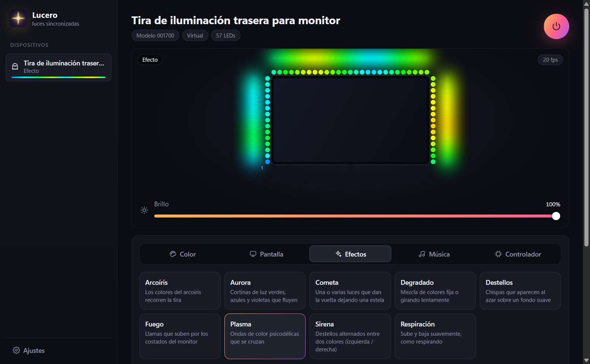
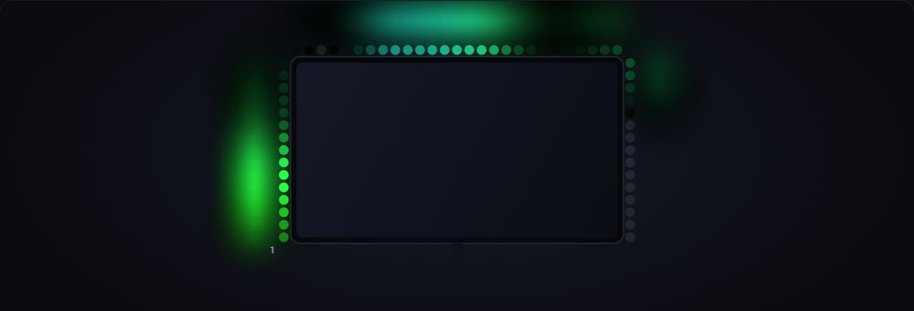
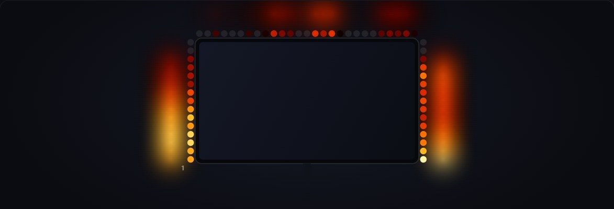
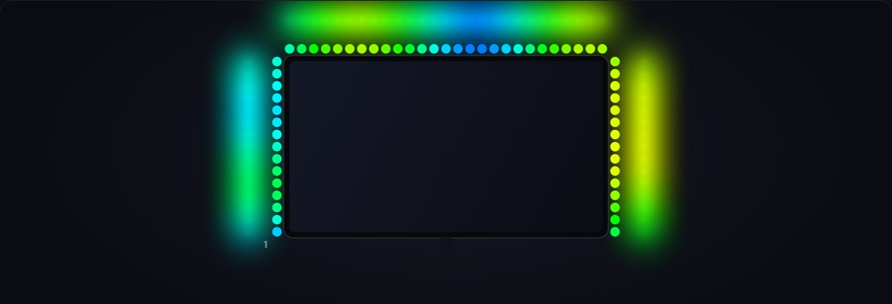
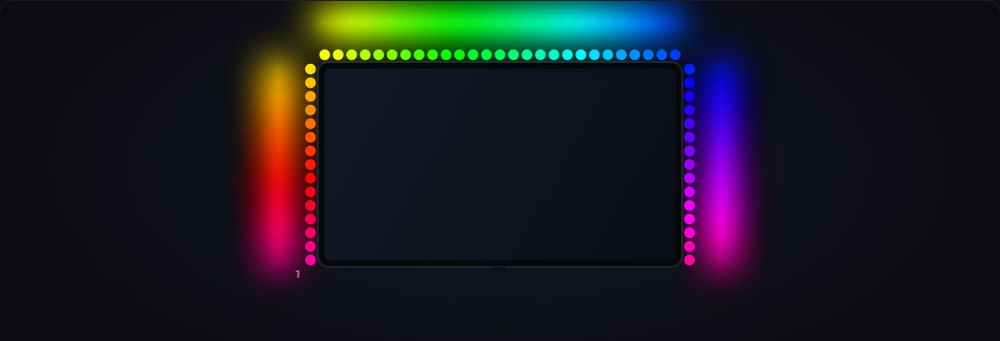
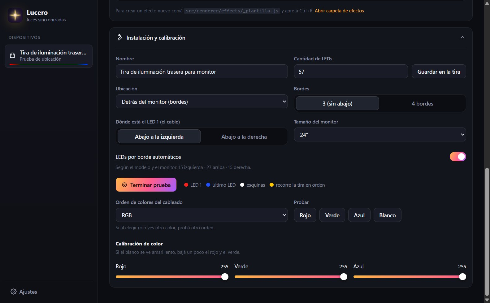

Sincronizada con la pantalla
Cada LED toma el color de su borde de la pantalla. Modo juegos (instantáneo) o películas (suave y sin barras negras).
Lucero es la app gratis para las tiras LED traseras de monitor: sincroniza las luces con la pantalla, trae un montón de efectos y las hace bailar con la música.

Funciona con la tira y el controlador USB que ya tenés. No hace falta cambiar nada del hardware.
Cada LED toma el color de su borde de la pantalla. Modo juegos (instantáneo) o películas (suave y sin barras negras).
Aurora, fuego, plasma, cometa, destellos, degradados y más, cada uno con sus propios ajustes de color y velocidad.
Escucha lo que suena en la PC: espectro, vúmetro, pulsos con el bajo y chispas con los agudos. Sin micrófono.
Un botón pinta la tira real para que veas dónde arranca y cómo sigue. Ajustás LEDs por borde, orden de colores y calibración.
Arranca con Windows, apaga las luces al bloquear o apagar la PC y vuelve a prenderlas al volver.
No manda datos a ningún servidor ni pide cuentas. Todo queda en tu PC.
La vista previa de la app muestra en vivo cómo se va a ver la tira detrás del monitor.





Bajá Lucero-Setup.exe desde el botón de esta página.
Abrí el archivo. Se instala sola, sin pedir permisos de administrador, y crea el acceso directo en el escritorio.
Aparece sola en la app y ya podés elegir colores, efectos o sincronizarla con la pantalla.
Si Windows dice "Windows protegió tu PC": es porque la beta no tiene firma digital (cuesta plata). Tocá Más información → Ejecutar de todas formas.
Contanos qué pasó en este formulario. Nos ayuda un montón a mejorar Lucero.